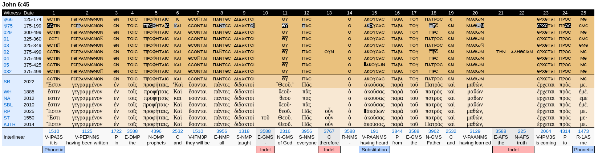

It is written in the prophets, ‘And they will all be taught by God.’ - John 6:45a
We want to answer the following question : Which passage of the Scripture Yeshua is referencing to?
The traditional answer is Isaiah 54:13, and if not Jeremiah 31:33-34.
The point with these references is that the Greek version of John 6:45 (which is generally considered to be the original one) states "it is written in the Prophets", so we should find the statement written in the Prophets, right?
That's however not the case with these two references above. Yet, Isaiahh is not that far from the quoted scripture.
You can't tell Isaiah 54:13 is the most near, so it's the scripture Yeshua is referencing to. If it's written "it is written", then it should be written; unless the statement is not true. We may add to that that John is someone who cares about accuracy: see for instance John 21:22-24.
So how to know which scripture Yeshua is referencing to?
First round
0. Knowing John 6:45a
- Ancient versions:
- Greek texts
- Vetus Latina texts
- Vetus Syra texts
- Coptic texts
- Vulgata text
- Peshitta text
- Ethiopic text
- Hebrew text
1. Checking the Hebrew variants of the Tanakh
- Check the Hebrew text and its critical apparatus for Isaiah 54:13
- Check the Hebrew text and its critical apparatus for Jeremiah 31:33-34
- Check in the Hebrew critical apparatus of all the Prophets in the Tanakh
2. Checking the other variants of the Tanakh
- Check the Septuagint and its critical apparatus for Isaiah 54:13
- Check the Septuagint and its critical apparatus for Jeremiah 31:33-34
- Check in the Septuagint critical apparatus of all the Prophets in the Greek translations of the Tanakh
3. Checking in books not in the Tanakh but yet can be considered as prophetic in other Bibles
- 'Deuterocanonical' books:
- Check the book of Letter of Jeremiah (all languages, all variants)
- Check additions to Daniel:
- Check the scripture of the Prayer of Azariah (all languages, all variants)
- Check the scripture of the story of Susanna (all languages, all variants)
- Check the scripture of Bel and the Dragon (all languages, all variants)
- Check the book of Baruch (all languages, all variants)
- 'Second temple' books
- Check the book of Enoch (all languages, all variants)
- Check the book of Jubilees (all languages, all variants)
- Check the book of The Ascension of Isaiah (all languages, all variants)
Second round
1. Checking in the other books not in the Tanakh
- 'Deuterocanonical' books
- 'Second temple' books
2. Checking the non-Prophet part of the Tanakh
- Check in the Hebrew critical apparatus of all the other scriptures in the Tanakh
- Check in the Septuagint critical apparatus of all the other scriptures in the Septuagint
3. About John 6:45a
- Armenian text
- Gothic text
- Syriac Harklean and Philoxenian
- Slavonic text
- Arabic text
First round
0. Knowing John 6:45a
- Ancient versions:
-
Greek texts

The f35 text has 'Ἔστιν γεγραμμένον ἐν τοῖς Προφήταις, ‹Καὶ ἔσονται πάντες διδακτοὶ Θεοῦ.› Πᾶς οὖν ὁ ἀκούων παρὰ τοῦ Πατρὸς καὶ μαθὼν ἔρχεται πρός με.'".
Hodge and Farstad has " Ἔστι γεγραμμένον ἐν τοῖς Προφήταις, «Καὶ ἔσονται πάντες διδακτοὶ Θεοῦ.» Πᾶς οὖν ὁ ἀκούων παρὰ τοῦ Πατρὸς καὶ μαθὼν ἔρχεται πρός με.".
In all these Greek texts we have "it is written", "in the prophets", and "they will all be taught by God". source: greekcntr.org
-
Vetus Latina texts on John 6:45
Scriptum est enim in profetis et erunt om Nes docibiles di Omnis qui audit a patre et didicit uenit ad me 2
scriptum est enim in p[r]of [etis] et erunt omnes docibiles di Omnis qui audit a patre et et didicerit uenit ad me 3
scriptu÷ est enim in propheta · ›et erunt o÷›nes docibi›les dei · ¶ Omnes qui audit a patre et didicerit uenit ad me · 4
est scriptum in prophetis et erunt omnes dociuiles dei omnis qui audit a patre et didicerit uenit ad me 5
Est scriptum in prophetis . Et erunt omnes docibiles di . Omnis qui audiuit a patre et didicit : uenit ad me . 6
scriptum e(st) in p(ro)phetis et er(unt) omnes docibiles di . Omnis qui audiuit a patre et didicit uenit ad me . 7
scriptu est enim in prophetis et erunt omnes docibilis di Omnis qui audiuit a patre et didicit uenit ad me 8*
scriptu est enim in prophetis et erunt omnes docibiles di Omnis qui audiuit a patre et didicit uenit ad me 8ᶜ
Est enim scriptum in prophetis erunt omnes docibilis di qui audit a patre et dedicit uenit ad me 9A
scribtum est enim in prophetis · et erunt omnes docibiles di · omnis qui audiuit a patre et didicit · uenit ad me · · 10
scriptum e(st) in prophętis et erunt om(ne)s docibiles di om(ne)s qui audiuit a patre et dic(it) uenit ad me 11A
Est scribtum in profetis · et erunt omnes docibiles di · Omnis ergo qui audit a patre et didicit ue nit ad me · 13
scribtum est enim [i][n] [...][...]erunt omnes docibiles di [...][...] [e] [...] [et] [disc] [...] [ue] [...]14
scriptu est eni in prophetis et erunt omnes docebiles di omnis qui audiuit a patre et didicit uenit ad me 15
[scribtu]m [est] [enim] [in] [p]ro [fetis] [et] [erun][t] [omnes] [docib][i] [les] [di] O[mnis] [qui] [audi] [uit] [a] [patre] [et] [didicit] [uenit] ad me 22
est scriptum in prophetis et erunt omnes docibiles di om(ni)s ergo qui audit a patre et discit ueniet ad me 27
Scriptum est in p(ro)ph et is : et er(unt) om(ne)s · docibiles di ˙ Om(n)is qui audit a patre : et didicit uenit ad me 29
scriptu e(st) in prophetis et erunt omnes docibiles di · · · Omnis qui audit a patre meo et didicit uenit ad me 30
[est] scriptum in prof[etis] Et erunt [omnes] [do]cibiles di · · Omnis qui audit a p[atre] et didicit uenit ad me 35
scribtum est in prophetis et erunt omnes docebilis di omnis qui audit a patre et didicit uenit ad me · 47
Scrip tum e(st) in p(ro)fetis et erunt om(ne)s docibiles di omnis qui audit a patre et dedit uenit ad me 48*
Scrip tum e(st) in p(ro)fetis et erunt om(ne)s docibiles di omnis qui audit a patre et dedicit uenit ad me 48ᶜ
Witnesses not present in this verse: 10A 11 16 18 20 22A 23 24 25 28 32 33 34 39 40 46 49
In all these Latin texts we have "it is written", "in the prophet(s)", and "they will all be taught by God". source
- Vetus Syra texts
- Curetonianus text:
ܟܬܝܒ ܓܝܪ ܒܢܒܝܐ ܕܢܗܘܘܢ ܟܠܗܘܢ ܡ̈ܠܦܐ ܕܐܠܗܐ ܟܘܠ ܡܢܗ ܕܫܡܥ ܗܟܝܠ ܡܢ ܐܒܐ ܘܝܠܦ܂ ܐܬܐ ܠܘܬܝ
- Sinaitucs text:
ܟܬܝܒ ܓܝܪ ܒܢܒܝܐ ܕܢܗܘܘܢ ܟܠܗܘܢ ܡܠܦܐ ܕܐܠܗܐ ܟܘܠ ܡܢ ܕܫܡܥ ܡܢ ܐܒܐ ܘܝܠܦ ܡܢܗ܂ ܐܬܐ ܠܘܬܝ
- Diatessaron text:
I didn't succeed to find a transcription of the Diatessaron, but I found a translation which has "It is written in the prophet, They shall all be the taught of God.". source (p. 74). other source.
All these texts give "it is written", "in the prophet(s)", and "they will all be taught by God".
- Coptic texts
TODO
- Vulgata text :
est scriptum in prophetis et erunt omnes docibiles dei omnis qui audiuit a patre et didicit uenit ad me
Same situation as with the Vetus Latina texts: we have "it is written", "in the prophet(s)", and "they will all be taught by God". source
TODO - check the different versions of the Vulgate
- Peshitta text:
ܟ݁ܬ݂ܺܝܒ݂ ܓ݁ܶܝܪ ܒ݁ܰܢܒ݂ܺܝܳܐ ܕ݁ܢܶܗܘܽܘܢ ܟ݁ܽܠܗܽܘܢ ܡܰܠܦ݂̈ܶܐ ܕ݁ܰܐܠܳܗܳܐ ܟ݁ܽܠ ܡܰܢ ܕ݁ܫܳܡܰܥ ܗܳܟ݂ܺܝܠ ܡܶܢ ܐܰܒ݂ܳܐ ܘܝܳܠܶܦ݂ ܡܶܢܶܗ ܐܳܬ݂ܶܐ ܠܘܳܬ݂ܝ
The text gives "it is written", "in the prophets", and "they will all be taught by God".
source: Leiden Peshitta (Leiden: Peshitta Institute Leiden, 2008). No other version of the Peshitta found for John 6:45.
- Ethiopic text:
ወሀሎ ጽሑፍ ውስተ መጽሐፈ ነቢያት «ከመ ይከውኑ ኵሎሙ ምሁራነ እምኀበ እግዚአብሔር» ወኵሉ እንከ ዘሰምዐ በኀበ አቡየ ተምሂሮ ይመጽእ ኀቤየ።
This text in guèze gives "it is written", "in the book of the prophets", and "they will all be taught by God". source: bible.com
TODO - verify if there are several versions of the Ethiopic text, if so, see if we can get an apparatus.
- Hebrew text
TODO - to add manually the transcriptions of the Hebrew manuscripts, see here.
English translation of John 6:45a Hebrew text is "For it is written in the prophets, ‘And all of them will be taught of El.’".
1. Checking the Hebrew variants of the Tanakh
- Check the Hebrew critical apparatus of Isaiah 54:13: TODO
- Check the Hebrew critical apparatus of Jeremiah 31:33-34 : TODO
- Check in the Hebrew critical apparatus of all the Prophets in the Tanakh: TODO
2. Checking the other variants of the Tanakh
- Check the Septuagint and its critical apparatus for Isaiah 54:13:
Göttingen LXX for Is 54:13: καὶ πάντας τοὺς υἱούς σου διδακτοὺς θεοῦ καὶ ἐν πολλῇ εἰρήνῃ τὰ τέκνα σου.
Göttingen LXX apparatus for Is 54:13: om. ἐν C 403′ Hi.: cf. M | τὰ τέκνα σου] erit filiis tuis Hi.
- Check the Septuagint critical apparatus of Jeremiah 31:33-34: TODO
- Check in the Septuagint critical apparatus of all the Prophets in the Greek translations of the Tanakh: TODO